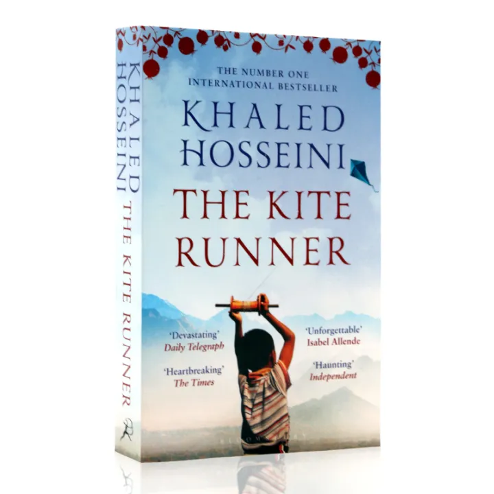

HERE YOU WILL FIND INFORMAION ABOUT MY BOOK AND LINKS TO ALL MY SOCIAL MEDIA
There is only one sin. and that is theft... when you tell a lie, you steal someone's
right to the truth.when you tell a lie, you steal someone's right to the truth.
Khaled Hosseini
ABOUT ME
I am Khaled Hosseini, an Afghan-born American novelist and
I was born on March 4, 1965, in Kabul, Afghanistan.
My family sought asylum in the United States after the Soviet invasion in 1979.
My debut novel, "The Kite Runner" (2003), became an international bestseller,
followed by "A Thousand Splendid Suns" (2007) and "And the Mountains Echoed" (2013).
My works often explore themes of friendship, betrayal,
and the socio-political landscape of Afghanistan.
I also serve as a goodwill envoy for
the UNHCR and established the Khaled Hosseini Foundation to aid Afghan refugees.
The bestseller for two years-"The Kite Runner"
"The Kite Runner" was a significant bestseller.
It appeared on the New York Times bestseller
list for over
two years and sold over seven million copies in
the United States.The novel's success led to
several adaptations,
including a 2007 film,
stage performances, and a graphic novel.

Where on Earth are we going?
by Jerry Brotton
This book explores the disorienting history
of our relationship to direction,
examining how different cultures
have used various positional schemata
to navigate the world
"The Women"
by Hannah
This novel follows Frances "Frankie" McGrath,
who joins the Army Nurse Corps
during the Vietnam War era.
The story highlights the
sacrifices and commitments
of women to their country
"The Housemaid"
by Frieda McFadden
A thrilling mystery filled with psychological terror,
this book follows Millie, a recent parolee who becomes
a housemaid for the Winchesters. The plot twists and
well-developed characters make it a compelling read
"The Letters I Will Never Send"
by Isabella Dorta
A collection of poems written in the form of confessional letters,
this book chronicles love, heartbreak,
mental health, and self-discovery.
It encourages readers to engage with the poems in a personal way
"Telling students to buy books is not the answer to book bans; libraries are meant to serve everyone"
by Victoria Waddle
"Year in Review: The top books of 2024 as chosen by High Desert book clubs"
This review highlights the top books of 2024 as chosen by book clubs in the High Desert, covering a range of genres and themes